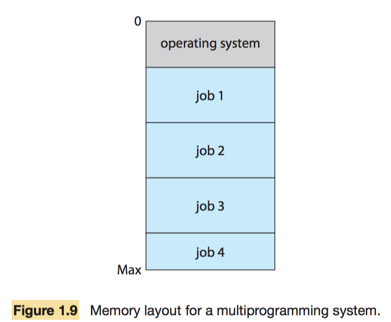

操作系统笔记01 导论
操作系统结构
- 多个作业同时保存在主存储器中，CPU通过在作业之间切换来执行多个作业。 
台式机的操作系统
- 这些计算机的操作系统从主机操作系统的开发中受益良多。
- Microsoft MS-DOS, Windows 9x/NT
- Apple Macintosh, Mac OS X
- IBM OS/2
- Unix: Solaris by Sun microsystem, HP-UX by Hewlett-Packard, AIX by IBM, Free (as in freedom) software such as BSD (Berkeley Software Distribution) Unix, GNU/Linux
(实时)嵌入式系统
- 嵌入式计算机通常用作工业控制系统等专用应用中的控制设备。通常他们资源有限：
- 处理器缓慢、内存有限
- 小甚至没有显示屏幕、有限的电源
- 有限的功能，只具有很少甚至没有用户接口
- 嵌入式系统几乎都运行实时操作系统。
- 他们资源有限：处理器缓慢、内存有限、小甚至没有显示屏幕、有限的电源 etc..
- Microsoft Windows CE (Consumer Electronics)
- Windriver vxWorks
- GNU / Linux
- 一些控制设备具有时间要求，即实时：
- 硬实时：处理必须在固定时间约束内完成，不允许任何超出时限的错误。
- 软实时：可以容忍偶然的超时错误。
All articles in this blog are licensed under CC BY-NC-SA 4.0 unless stating additionally.